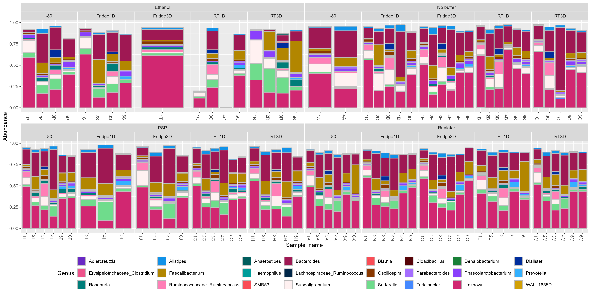

Chapter 10 Supp figure 4
10.1 Barchart of Genera biomarkers
#Read in sig table (p-value <0.05)
df <- read.csv(
file = "./standard_maaslin2_genus/significant_results.tsv",
sep = "\t", check.names=FALSE)
#Get all unique genera
genera_biomarkers <- unique(df$feature)
#load in phyloseq object
load("./data/preprocess_physeq")
#Clostridium
#Get logical vector to know which rows
clos_subset_vector <- as.vector(replace((tax_table(physeq)[,"Genus"] == "Clostridium"),
is.na(tax_table(physeq)[,"Genus"] == "Clostridium"),
FALSE))
#Extract taxa names
clos_taxa_names <- taxa_names(physeq)[clos_subset_vector]
#Make new genus names for clositriudm
clos_new_genus_name <- paste(tax_table(physeq)[clos_taxa_names,"Family"],
tax_table(physeq)[clos_taxa_names,"Genus"],
sep = "_")
tax_table(physeq)[clos_taxa_names,"Genus"] <- clos_new_genus_name
#Ruminococcus
#Remove instances of square brackets
clos_subset_vector <- as.vector(replace((tax_table(physeq)[,"Genus"] == "[Ruminococcus]"),
is.na(tax_table(physeq)[,"Genus"] == "[Ruminococcus]"),
FALSE))
#Remove []
clos_taxa_names <- taxa_names(physeq)[clos_subset_vector]
tax_table(physeq)[clos_taxa_names,"Genus"] <- "Ruminococcus"
#Get logical vector to know which rows
clos_subset_vector <- as.vector(replace((tax_table(physeq)[,"Genus"] == "Ruminococcus"),
is.na(tax_table(physeq)[,"Genus"] == "Ruminococcus"),
FALSE))
#Extract taxa names
clos_taxa_names <- taxa_names(physeq)[clos_subset_vector]
#Make new genus names for clositriudm
clos_new_genus_name <- paste(tax_table(physeq)[clos_taxa_names,"Family"],
tax_table(physeq)[clos_taxa_names,"Genus"],
sep = "_")
tax_table(physeq)[clos_taxa_names,"Genus"] <- clos_new_genus_name
#subset samples to remove rnalater unwashed samples
physeq <- subset_samples(physeq, !(RNAlater_washed_status == "unwashed"))
#Remove anything that is not bacteria
physeq <- subset_taxa(physeq, Phylum != "Bacteria")
#Remove unwanted [] in genus names
#tax_table(physeq)[,"Genus"] <- gsub(pattern = "\\[" , replacement = "", tax_table(physeq)[,"Genus"])
#tax_table(physeq)[,"Genus"] <- gsub(pattern = "\\]" , replacement = "", tax_table(physeq)[,"Genus"])
#Remove all info above genus
#This is so the aggregate works below
tax_table(physeq)[,"Phylum"] <- NA
tax_table(physeq)[,"Class"] <- NA
tax_table(physeq)[,"Order"] <- NA
tax_table(physeq)[,"Family"] <- NA
#Convert to genus table
physeq <- aggregate_taxa(physeq, "Genus")
#Convert taxa names (row names) to genus
row.names(tax_table(physeq)) <- tax_table(physeq)[,"Genus"]
#transform to relabund
physeq_relabund <- microbiome::transform(physeq, "compositional")
#Filter physeq to only contain biomarker genera
#Select non biomarker genera
biomarker_genera_physeq <-
prune_taxa(sort(genera_biomarkers),physeq_relabund)
#Attempt to create a better colour palette
#https://carbondesignsystem.com/data-visualization/color-palettes/
col_pal <- c("#6929c4", "#1192e8", "#005d5d", "#9f1853","#fa4d56", "#570408",
"#198038", "#002d9c", "#ee538b","#b28600", "#009d9a", "#012749",
"#8a3800", "#a56eff", "#8a3ffc", "#33b1ff", "#007d79", "#ff7eb6",
"#fa4d56", "#fff1f1", "#6fdc8c", "#4589ff", "#d12771", "#d2a106",
"#08bdba", "#bae6ff", "#ba4e00", "#d4bbff")
#Bar plots
#Facet by Bufferused and storage condition
# p <- plot_bar(biomarker_genera_physeq, x = "Sample_name", fill = "Genus")+
# geom_bar(aes(color=Genus, fill=Genus), stat="identity", position="stack") +
# facet_wrap(~Bufferused_and_Storageconditions, nrow = 2, scales = "free") +
# theme(legend.position="bottom")
p <- plot_bar(biomarker_genera_physeq, x = "Sample_name", fill = "Genus")+
geom_bar(aes(color=Genus, fill=Genus), stat="identity", position="stack", colour="grey") +
facet_nested_wrap( ~ Bufferused + Storageconditions , scales = "free_x", nrow = 2 ) +
scale_fill_manual(values = col_pal) +
theme(panel.spacing.x=unit(0.1, "lines")) +
theme(legend.position="bottom") +
guides(fill=guide_legend(nrow=3,byrow=TRUE))
ggsave(plot = p, filename = "./figures/genus_biomarkers_relabund_facet_buffer_n_storage.png",
device = "png", units = "mm",
height = 200, width = 400)
10.2 MaAsLin2 on genera Day 1 vs Day 3
#Remove Days stored info
df_metadata <- df_metadata[,c(1,2)]
#fit data
fit_data <- Maaslin2::Maaslin2(input_data = df_data,
input_metadata = df_metadata,
output = "maaslin2_genus_days_stored",
#Random sample used for subject/patients
random_effects = "Patientnumber",
reference = c("DaysstoredpriortoDNAextraction", "1")
)No associations were detected